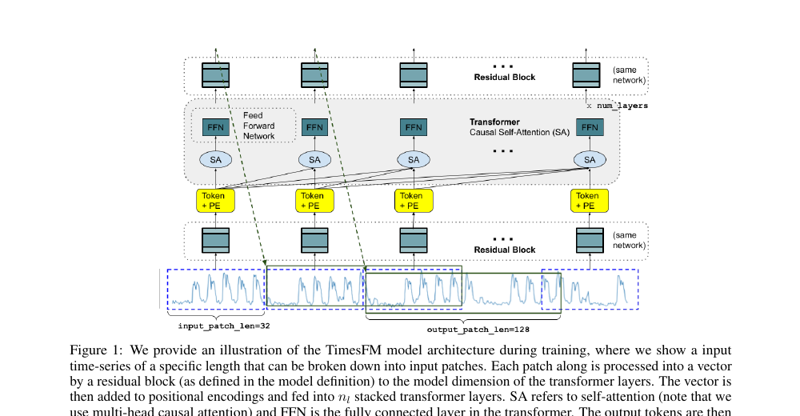
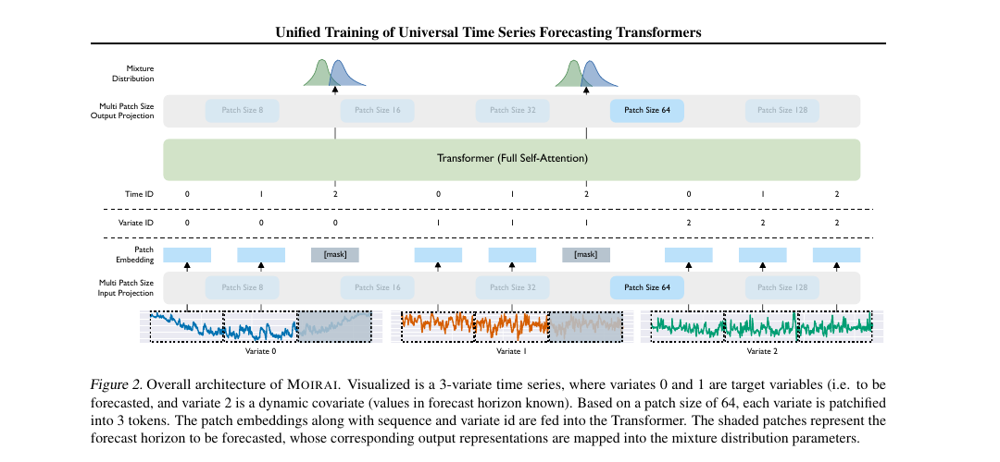
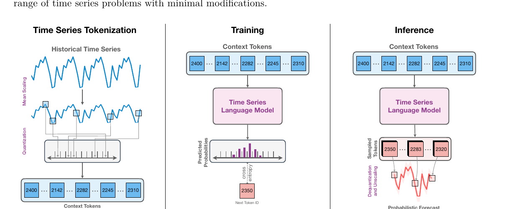
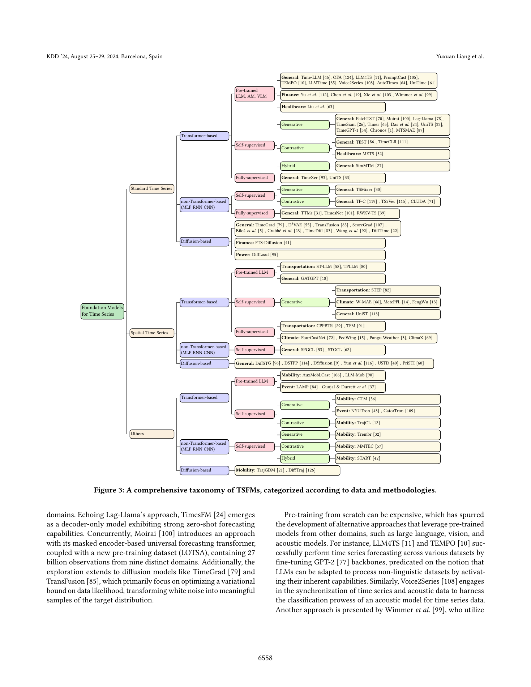
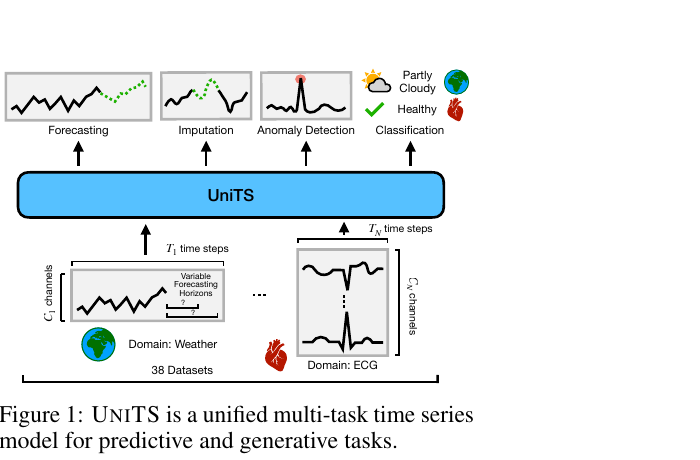
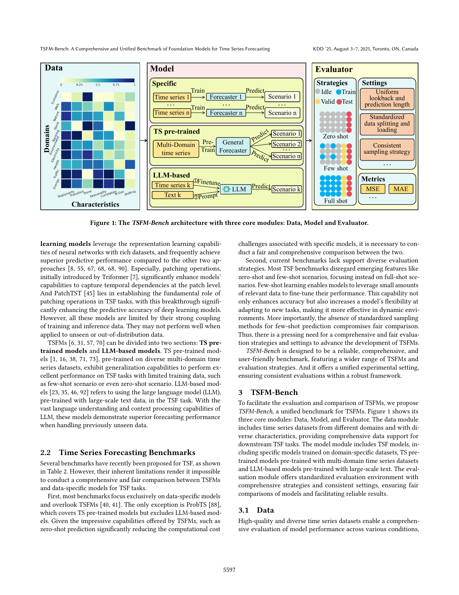

Animation A · Forecasting
From history to horizon
A model reads recent context, recognizes patterns, then projects a distribution into the future.
History becomes context.
How did forecasting move from hand-built equations to models pretrained across millions of sequences? Follow the ideas, see the mechanics, then test a forecast for yourself.
Choose a point on the timeline. Each generation keeps useful ideas from the last, while changing how much it can learn across series.
Before a model, people forecast with judgment, seasonal rules and simple averages. A naive forecast carries the latest observation forward; a seasonal naive forecast repeats the value from the same period last cycle. These humble baselines are still useful because they are fast, transparent and surprisingly hard to beat.
Play each short sequence. The animations are schematic: they show the flow of information, not a literal rendering of model internals.
A model reads recent context, recognizes patterns, then projects a distribution into the future.
The learning target expands: fit a single history, then learn reusable patterns across a broad corpus.
It is the training and transfer setup that matters: broad pretraining creates a reusable starting point for many new forecasting tasks.
Train on many sequences from different domains. The model learns recurring shapes such as trend, seasonality, level shifts and bursts.
many histories → shared parametersNumbers are not words. Designs may patch nearby values, quantize them into bins, or encode multiple variables together.
values → patches / tokens → representationsUse the pretrained model on a new series. Zero-shot means no target-series training; adaptation can still help when data permits.
context + horizon → forecast distributionA longer horizon compounds uncertainty. Adjust how far ahead you forecast and watch the uncertainty band widen.
Illustrative values only. This is a visual teaching aid, not a trained model or investment forecast.
Pretraining can provide a strong starting point. The forecasting system still needs careful data, evaluation and operating choices.
Specify cadence, horizon, cost of errors, and who acts on the forecast.
Align timestamps, handle gaps, units, outliers, and known future covariates.
Use seasonal-naive and statistical baselines. Backtest with rolling time splits.
Monitor drift and calibration; fine-tune or add domain signals where justified.
Match the forecast horizon, frequency, available covariates and metric across models.
Only use information that would actually be available at the forecast origin.
MAE is interpretable; scaled errors compare series; quantile loss evaluates intervals.
Rare events, policy changes and causal interventions may not resemble pretraining data.
These six papers trace the move from reusable forecasting models toward multi-task systems and more disciplined evaluation. Titles open the paper or its official record.
One decoder-only Transformer predicts in patches. The paper reports a 200M-parameter model pretrained on about 100B real-world time points and evaluates zero-shot forecasts on unseen datasets.
A masked encoder addresses mixed frequencies and variable counts. Its LOTSA archive contains over 27B observations across nine domains; the model produces probabilistic zero-shot forecasts.
Scaling and quantization turn values into a fixed token vocabulary; T5-family models learn next-token forecasting. The paper tests 20M–710M models across 42 datasets.
Organizes the field by architecture, pretraining, adaptation and data modality. Use it as the conceptual map around the individual model papers.
Task tokens let one shared model address forecasting, classification, imputation and anomaly detection. The paper evaluates across 38 datasets in multiple domains.
A forecasting benchmark spanning 21 datasets across 10 domains, with zero-shot, few-shot and full-shot evaluation to compare adaptation settings consistently.
Each chapter pairs a figure from the PDF you supplied with a step-through animation. Read the figure in order, then compare what the authors claim with what their experiments actually test.
Das, Kong, Sen & Zhou · Google Research · arXiv 2310.10688 · ICML 2024

2310.10688v4.pdf. Paper and version history.Time series do not arrive with a shared vocabulary like words. A model must cope with different sampling rates, context lengths, horizons and value scales. Public time-series training data is also much smaller and more fragmented than text corpora. TimesFM asks whether enough diverse sequences, together with an architecture designed for numeric histories, can still produce useful transfer.
The blue trace is the observed history. It is divided into short patches of 32 values. A residual projection turns each patch into a vector; positional information is added; causal self-attention lets each patch use only the history up to that point. The output projection can emit a longer patch of 128 values. In the paper's training diagram, that is a block forecast for the next interval, not a token-by-token numerical decoding loop.
The model has about 200 million parameters. Its pretraining mix is described as roughly 100 billion time points, largely Google Trends and Wikipedia page views, alongside public and synthetic series. The paper trains a point forecaster with squared-error loss. The key engineering idea is asymmetric patching: a manageable input patch can summarize history while a larger output patch reduces the number of autoregressive steps needed for long horizons.
The authors report zero-shot tests on held-out public benchmark datasets spanning multiple domains, horizons and granularities. TimesFM is competitive with strong models trained specifically on those target datasets in many evaluated settings. Their ablations also show that synthetic data helps where real training data under-represents some frequencies, and output-patch choice matters.
The paper establishes a promising point-forecasting baseline on its chosen benchmarks; it does not prove that one model wins for every series or decision. The original design is centered on point predictions, so its central output is not a calibrated probability distribution. Zero-shot performance also depends on how target domains and training data overlap.
Follow the signal through the architecture.
The animation follows the paper's Figure 1; it is a simplified teaching redraw, not the authors' exact implementation.
Woo, Liu, Kumar, Xiong, Savarese & Sahoo · Salesforce AI Research · arXiv 2402.02592 · ICML 2024

2402.02592v2.pdf. Paper and version history.Moirai names the hard parts directly: frequency changes the scale of useful patterns; dimensionality changes how many variables arrive together; and distribution changes whether values are smooth, count-like, positive and skewed, or heavy-tailed. A model designed around one dataset's frequency and channel count can be brittle when those assumptions change.
Each variable is split into patches. Moirai has several input and output projections for different patch sizes, allowing the model to represent different sampling frequencies without forcing every sequence into one patch length. In the figure, two variables are forecast targets and another is a future-known dynamic covariate. The forecast horizon is represented by learned mask embeddings during encoding; the Transformer processes observed and masked patches together.
The model flattens variables into one sequence and adds time and variate identities. Its any-variate attention adds a learned distinction between attention within a variable and across different variables. This lets one model accept different numbers and orderings of variables. At the output, a mixture of distributions can represent different data types: the paper describes Student-t, negative-binomial, log-normal and low-variance normal components. The model is pretrained on LOTSA, a curated archive with over 27 billion observations from nine domains.
The paper evaluates zero-shot forecasting against full-shot specialists and reports competitive or superior results across its tested benchmark settings. The contribution is a combination of data scale and explicit design for frequency, variable-count and distribution heterogeneity, rather than a claim that the Transformer alone solves universality.
“Universal” describes the intended input and forecasting coverage; it does not mean equal accuracy on every domain. The paper is still a forecasting model. Results depend on the LOTSA training mixture, benchmark composition, horizon and metric. A future covariate is only useful when its future values are genuinely known at prediction time.
Three channels enter; a forecast distribution leaves.
Simplified redraw of the challenge and architecture shown in Moirai Figures 1-2; no performance values are encoded in this animation.
Ansari et al. · Amazon / AWS AI Labs · arXiv 2403.07815 · Transactions on Machine Learning Research 2024

2403.07815v3.pdf. Paper and version history.Language models predict the next token from prior tokens. Raw measurements are continuous values, so Chronos creates a finite vocabulary for them. The paper first scales a series using its magnitude, then quantizes values into bins. Each observation becomes a token ID. This is a modeling choice: the model predicts a category for each next value, and that category maps back to a numerical range.
A T5-family Transformer receives context tokens and learns to predict the next token with cross-entropy. The reported family ranges from 20 million to 710 million parameters. At inference, it samples token sequences autoregressively, maps sampled bins back to values, then reverses the scaling. Repeating the sampling yields multiple possible futures; their spread represents a predictive distribution rather than only one central line.
The team addresses limited public training data with two augmentations. TSMixup forms synthetic series by mixing examples. KernelSynth samples Gaussian-process patterns from combinations of kernels, giving the model additional trend, smoothness and periodic structure. This is not an incidental trick: the authors argue that the quantity and coverage of time-series data constrain generalization, so synthetic diversity can help.
On 42 datasets, Chronos performs strongly on datasets represented during training and obtains zero-shot results on new datasets that are comparable to, and sometimes better than, task-trained competitors in the reported comparisons. Its probabilistic samples are a built-in consequence of the token-distribution objective.
The paper's forecasting setup is univariate and assumes regularly spaced observations. Quantization trades numeric precision for a manageable vocabulary, and sampled paths are only as calibrated as the training and evaluation setup. Token prediction does not give the model causal knowledge or guarantee that future shocks are foreseeable.
This is the key conceptual move in Chronos.
Teaching redraw of the three panels in Chronos Figure 1. The token values in this animation are illustrative, not the paper's learned vocabulary.
Liang, Wen, Nie, Jiang, Jin, Song, Pan & Wen · KDD 2024 · DOI 10.1145/3637528.3671451

3637528.3671451.pdf. Paper and version history.The survey's contribution is a methodology-centered synthesis. Its authors argue that listing models by name is not enough: a useful account must connect the kind of data to the architecture, pretraining objective, adaptation method and downstream task. Figure 3 is their compact index into that space.
First split the data into standard time series, spatial time series and other structured sequences. Standard series include sensor readings, demand or finance; spatial series add locations and relationships such as roads; “other” includes event, mobility or clinical sequences. The next branch asks whether the architecture uses Transformers, non-Transformer networks such as MLPs/RNNs/CNNs, or diffusion methods. Training branches distinguish pretrained language models from self-supervised or fully supervised learning; self-supervision is then separated into generative, contrastive or hybrid objectives.
The paper's broader method chapters explain patching, attention and other architecture choices; pretraining data and objectives; adaptation through fine-tuning, prompting or reprogramming; and the expansion beyond standard univariate forecasting. Its key teaching point is that “time-series foundation model” names a family of strategies, not one settled architecture.
A reader can use this taxonomy to locate a model before comparing results: What input domain does it target? What is pretrained? What is the objective? What must change for a new task? This vocabulary helps explain why two models both called foundation models may have very different transfer behavior.
A survey organizes published work at its publication date; it does not provide a controlled head-to-head experiment or establish that every branch is equally mature. The taxonomy is a useful lens, not a leaderboard. Some models fit more than one branch, and later work can extend or revise the map.
Follow the classification questions from data to method.
The animation simplifies the branching logic of survey Figure 3; it is not a copy of the complete taxonomy.
Gao, Koker, Queen, Hartvigsen, Tsiligkaridis & Zitnik · NeurIPS 2024

NeurIPS-2024-units-a-unified-multi-task-time-series-model-Paper-Conference.pdf. NeurIPS paper record.Forecasting produces a future sequence; classification produces a label; imputation fills missing values; anomaly detection identifies unusual regions. UniTS encodes the requested task in tokens. Sample tokens represent the input; prompt tokens identify task or dataset context; GEN tokens support sequence generation and CLS tokens support classification. The same backbone can therefore receive different instructions about what output to construct.
UniTS applies attention along both time and variable dimensions, accommodating different sequence lengths and channel counts. A dynamic linear operator interpolates temporal weights so it can handle varying input lengths. A gating module aims to reduce interference between domains and tasks. Shared GEN and CLS towers decode generative and predictive outputs. Pretraining uses masked reconstruction to train the components for both forms of task; prompting can then adapt a frozen model with a small number of task tokens.
Figure 1 is the intuitive summary; Figure 2 of the paper shows the token-level mechanism and shared towers. The authors evaluate single-task and multi-task settings. Their abstract reports 38 datasets across sensor, healthcare, engineering and finance domains; the benchmark includes forecasting, classification, anomaly detection and imputation comparisons. They also report few-shot transfer and prompt-based adaptation.
The paper demonstrates a concrete route toward a shared multi-task time-series model and reports competitive results across its chosen 38-dataset suite. Its central contribution is task unification in the architecture and training recipe, not simply a larger forecasting-only pretraining corpus.
Sharing weights does not remove the need to define tasks, prepare compatible datasets or test each output. Results on the paper's task mix do not guarantee equal benefit on every domain. A model that supports classification and imputation is broader in task scope than TimesFM, but that alone does not make its forecasts more accurate.
Different inputs; one backbone; task-specific outputs.
Simplified explanation of UniTS Figures 1-2 and the paper's sample, prompt and task tokens.
Li et al. · KDD 2025 · DOI 10.1145/3711896.3737442

3711896.3737442.pdf. ACM paper record.TSFM-Bench is not another forecasting architecture. It is a controlled comparison framework. Its data module organizes multivariate series across domains and statistical characteristics. The model module separates dataset-specific forecasters, models pretrained on time series, and models based on pretrained language models. The evaluator applies common settings and measures outcomes.
Zero-shot asks what a pretrained model can do without training on target data. Few-shot gives it a limited sample for adaptation. Full-shot trains with the target dataset's available training data. These answer different practical questions; comparing one model zero-shot against another after full training would mix model capability with data access.
The paper standardizes details such as lookback and prediction lengths, data loading and splitting, normalization, and few-shot sampling. The benchmark includes 21 datasets from 10 domains and tracks important series properties such as trend, seasonality, correlation and distributional behavior. The results show that model rankings change with dataset and scenario; no single TSFM dominates every evaluated case. This is a useful corrective to treating one headline benchmark score as a universal verdict.
A reusable protocol makes results more comparable and shows where strengths vary. The authors' analysis highlights domain and data characteristics, few-shot access, inference cost and model size as relevant dimensions alongside average forecast error.
A benchmark is a snapshot shaped by its datasets, splits, metrics and model versions. TSFM-Bench focuses on forecasting, so it does not evaluate the broader classification, imputation and anomaly-detection scope of UniTS. Standardization improves comparison; it cannot guarantee that the benchmark matches a particular deployment.
Three modules must agree before a ranking means anything.
Simplified teaching redraw of TSFM-Bench Figure 1. The complete source page is shown above.